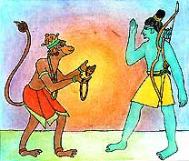
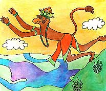

<html>
<!-- Mirrored from www.damodara.de/espaniol/html/jiva_tattva/Hanuman/Hanuman_06.htm by HTTrack Website Copier/3.x [XR&CO'2013], Sun, 23 Feb 2014 09:43:44 GMT -->
<head>
<title>Hanuman encuentra a Rama</title>
<meta http-equiv="Content-Type" content="text/html; charset=iso-8859-1">
</head>

<body bgcolor="#FFFFFF" text="#000000">
<table width="45%" border="0" cellspacing="15" cellpadding="0" align="center" bordercolor="#FFFFFF" bgcolor="#FFFFFF" height="1329">
  <tr> 
    <td width="419" height="326" valign="top"> 
      <blockquote>
        <div align="center"> 
          <p align="center"><font face="Comic Sans MS"><o:p></o:p>Mientras tanto, 
            el pr&iacute;ncipe Rama, ya hab&iacute;a regresado a casa y andaba 
            buscando a su querida esposa Sita.</font></p>
          <p><font face="Comic Sans MS" size="3">&iquest;A d&oacute;nde habr&aacute; 
            ido? -pensaba Rama, mientras la buscaba por el bosque. </font><font face="Comic Sans MS" size="3">Hanuman 
            y Sugriva encontraron al pr&iacute;ncipe dando vueltas por el bosque 
            llamando a Sita. </font><font face="Comic Sans MS" size="3">&iexcl;Sita! 
            &iexcl;Sita! -llamaba Rama- &iquest;Qui&eacute;n es Sita? -pregunt&oacute; 
            Hanuman-
            Sita es mi esposa, la princesa, -dijo Rama- Ella ha desaparecido. 
            As&iacute; veo, -dijo Hanuman- Tal vez estas joyas le pertenezcan 
            a ella.
            &iexcl;Estas joyas son de Sita!, -respondi&oacute; Rama- &iquest;D&oacute;nde 
            est&aacute; ella? y &iquest;Qui&eacute;nes son ustedes?
            Yo soy Hanuman y &eacute;l es el Rey Sugriva. Nosotros te ayudaremos 
            a encontrarla.
            Gracias -dijo Rama- Por favor tenemos que encontrarla.</font></p>
          <p align="center"><font face="Comic Sans MS" size="3" color="#000000"> 
            </font></p>
        </div>
	  </blockquote>
    </td>
  </tr>
  <tr> 
    <td valign="top" height="2"> 
      <div align="center"> 
        <p><a href="../../../images/galeria/colores/radha%20m%20gopal/index.html"></a></p>
        <p><font face="Comic Sans MS" color="#000000" size="2"><b>Hanuman le entrego 
          a Rama las joyas de Sita</b></font></p>
      </div>
    </td>
  </tr>
  <tr> 
    <td height="258" valign="top"> 
      <blockquote> 
        <div align="center"> 
          <p><font face="Comic Sans MS" size="3">HANUMAN VA EN BUSCA DE SITA</font></p>
          <p><font face="Comic Sans MS" size="3">Hanuman vol&oacute; hacia el 
            sur. &Eacute;l sab&iacute;a que Sita hab&iacute;a sido llevada a la 
            ciudad de Lanka por el demonio Ravana. Entonces, Hanuman creci&oacute; 
            y se volvi&oacute; grande y fuerte y de un solo gran brinco empez&oacute; 
            a volar entre las nubes hacia la ciudad en la isla.</font></p>
          <p><font face="Comic Sans MS" size="3">Mientras volaba sobre el oc&eacute;ano, 
            su sombra fue vista por un terrible monstruo marino. </font><font face="Comic Sans MS" size="3">&iexcl;Grrrr! 
            -dijo el monstruo- &iexcl;Estoy muy hambriento y quiero comerte! Entonces 
            el horrible monstruo abri&oacute; su boca y se trag&oacute; a Hanuman 
            entero. &iexcl;Oh! &iexcl;Oh! -pensaba Hanuman- mientras resbalaba 
            por la garganta del horrible monstruo-.</font></p>
        </div>
      </blockquote>
 
   </td>
  </tr>
  <tr> 
    <td height="173" valign="top"> 
      <div align="center"> </div>
      <div align="center"> 
        <p><a href="../../../images/galeria/colores/radha%20m%20gopal/index.html"></a></p>
        <p><font face="Comic Sans MS" size="2"><b>Hanuman volando hacia la isla 
          de Lanka</b></font></p>
      </div>
    </td>
  </tr>
  <tr> 
    <td height="45" valign="top" bgcolor="#FFFFFF"> 
      <div align="center"><font face="Comic Sans MS"><a href="Hanuman_05.html"></a><a href="Hanuman.html"></a> 
        <a href="Hanuman_07.html"></a></font></div>
    </td>
  </tr>
</table>
<p>&nbsp;</p>
<p>&nbsp;</p>
</body>
<!-- Mirrored from www.damodara.de/espaniol/html/jiva_tattva/Hanuman/Hanuman_06.htm by HTTrack Website Copier/3.x [XR&CO'2013], Sun, 23 Feb 2014 09:43:46 GMT -->
</html>
